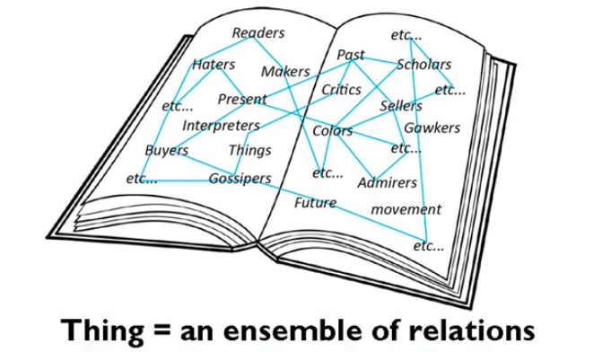

| Title | Research as a Leisure Activity |
| Subtitle | a convivial weekend retreat for collecting & creating |
| Instructors |
Celine Nguyen & Laurel Schwulst |
| Dates |
Weekend of July 24-26
( 2026 ) |
| Times |
Friday, July 24 — 7-9pm Saturday, July 25 — 10am-7pm Sunday, July 26 — 10am-5pm |
| Location | New York City, In-Person (Specific Venue TBD) |
| Price |
$550 ( two half priced scholarships available ) |
| Application Deadline | July 3, 2026 at 11:59pm EST — Apply |
Research as Leisure Activity is a class — in the form of a convivial weekend retreat — about how research and appreciation can help us create new works. We’ll collect things that inspire us — let’s call them our “shimmering points”✦✦ — share them with each other, and draw from them when creating something new. These can be new works of art, writing, or whatever medium you feel most expressive in.
This weekend class is taught by Celine Nguyen & Laurel Schwulst and hosted in-person in New York City. We’ll begin on Friday evening and finish on Sunday afternoon. You’ll have both quiet working time and more sociable, conversational time to learn from other participants. We’ll also include collaborative exercises — more like conversations than conventional critiques — where we’ll help shepherd each other’s projects into being.

We hope that you’ll emerge from the weekend with:
- A collection of shimmering points that have shaped your interests
- A refined understanding of how to harness them in your own practice (which could be anything — art, writing, objects, lectures, performances, websites, community endeavors, etc.)
- A finished work


There’s a special quality that comes from starting projects, and a different, also special quality that comes from finishing them. Because of that, we’d like this class to be a container for making something (even if it’s small!) in a single weekend.
We believe the best retreats, classes, residencies, etc. offer a protected space to reflect on one’s practice to encourage new, exciting directions to go towards. Similarly, we want this class to help shape the work you’ll do later on this summer, autumn, and beyond.


Keywords
- Affinity
- Appreciation
- Collecting
- Conversation
- Citation
- Discovery
- Emergence
- Exuberance
- Flow
- Relational
- Practice

Background
Many of us have had the experience of scrolling and being struck by something special: an image, tweet, video, comment. And when we leave our screens and walk into the world, we might be captivated by a beautifully dressed stranger, a memorable turn of phrase, a flower blooming. Certain things stay with us and shimmer for some obscure reason. They might even begin to shape the way we think.
For Celine, one of these shimmering points was “research as leisure activity,” a phrase was originally written by the librarian Karly Wildenhaus to describe what the website Are.na was for.
Something about this phrase — “research as leisure activity” — felt immediately evocative and important, but why? And for what?
A few years later, when Celine began writing a newsletter, she decided she would send out a new post every week. When she didn’t know what to write, she would unearth something that had been important to her in the past, and try to understand its particular energy and charge. Returning to Wildenhaus’s phrase helped her write a newsletter about how...
-
Research…
- begins with a desire to ask and answer questions
- is informed by the history, theory, and practices of a discipline
- culminates in some output
- is strengthened by a social and intellectual community
-
Research as leisure activity...
- is directed by passion and interest
- is exuberantly undisciplined or antidisciplinary
- is fundamentally very personal
This newsletter is also how she and Laurel met, because Celine wrote:
Who is doing this kind of research as leisure activity? Artists, often…the artist / designer / educator Laurel Schwulst uses Are.na to develop and refine particular themes, directions, topics of inquiry … some of which become artworks or essays or classes that she teaches.
New points bring new ideas, which bring new ways of looking at the world, which can be shaped into artistic experience, which is another name for feeling more alive.


Laurel has long collected shimmering points — whether they are special rocks from travels, mysterious videos on YouTube, enigmatic mottos in everyday language, or helpful synchronicites.
Some of her first published writing began by reflecting on her collected shimmerings. She remembered the ongoing life of one such collection, beginning at the beginning:
My channel Wild Animals vs. Manmade Materials started with a fascination towards a single piece of media. At the time, I was returning to YouTube day after day to watch this mesmerizing video of leopards examining their reflections through mirrors installed in a jungle.
A single piece of media piqued her interest. It grew into a collection, which became an ongoing container or frame to see the world, for both herself and others. She wrote an essay about this collection and the process of curating it, illuminating its true spirit:
In a sense, Wild Animals vs. Manmade Materials is a collection of sentinel species. You can understand it as a portrait of the planet using animal signals as material.
Speaking of animal signals, Laurel realized that both she and Celine had independently recalled the significance of the egg around the same time, before they knew each other.

We wanted to share these stories to explain why we’re teaching the Research as Leisure Activity class this summer. There are so many shimmering points that we — and you! — can draw from:
- Quotes
- Images
- Websites
- Animals (types of, images of)
- Films that you still think about
- Books
- Ideas
- Something you’re excited to introduce to others
- Something you’d like to see every day
- Something you’ve been holding onto and really want to use, but you haven’t found a home for yet
And you might use these in the creation of:
- A photo series
- A website (useful, useless, beautiful, strange)
- An essay, poem, or other written work
- A slide deck
- An idea
- A software experience
- A zine
- A song
- An artwork, a large one or something that fits into a tote bag/pocket, like a bookmark or a zine
- … or anything else
At the end of the class (Sunday afternoon), we’ll share our projects and the story behind them.


Celine Nguyen is a software designer and writer from California. She’s interested in how we speak to computers and each other, how we attend to and honor the artworks that shaped our past, how the internet is reshaping cultural production, and how to begin new projects. She writes the newsletter personal canon about literature, design, art and technology.
Laurel Schwulst is an artist, writer, and technologist. She teaches design at Washington University in St. Louis and also directs Ultralight School. Lately she’s curious about her dæmon, who guided her to create this school, reach out to Celine, and co-teach this class, among other activities. Previously Laurel taught at Yale and Princeton, co-authored a book of fragrance reviews, and held design roles at Linked by Air, Kickstarter, and Are.na.

FAQ
( What is the class format? )
This class is an intensive-yet-exploratory weekend “hackathon.” It takes place in-person in NYC the weekend of July 24-26, 2026. (Specific location TBD.) Specifically, it takes place the evening of Friday, July 24 (6-8pm), Saturday, July 25 (10am - 7pm), and Sunday, July 26 (10am - 5pm).
When we say “hackathon,” we’re imagining something like an intensive retreat where we enter into a leisurely-research container and emerge with new ideas (or new perspectives on old ideas) and a new project. But it will feel intense in a collaborative and supportive way. We’re all here to facilitate the emergence of new works and new understandings.
( Can I participate remotely? )
We designed this class to be in-person. However, if you’re interested in another location / remote option in the future, drop us a line at mail@ultralight.school expressing your interest.
( What materials do I need? )
It’s helpful to come with an idea of what you want to research & make. (And filling out the class application will help with this, too.) But this can change! When you show up to the weekend retreat, you can decide what feels most interesting and alive.
When you show up in-person, make sure to equip yourself with a living inventory of any physical item or tool that can help you research & create.
( Are there scholarships available? )
Yes, there are two half-priced slots available for individuals who need help funding the class.
( Meta question: What shimmering points helped create this class? )
We've been assembling a living bibliography of ideas, references, and other shimmering points which helped inspire this very class, which you're welcome to contribute to on Are.na.
( Who might be good for this class? )
We’re hoping that the class will feel serious but also playful. We’re trying to understand — and help each other understand — what we’re drawn to, and how that might shape our own practices. This will involve a good deal of collecting and introspecting and reflecting. But we should be lighthearted about it! Especially with the desired output of the class. Research as leisure activity is also a lifelong activity, and what we do this weekend is just one part of the overall creative lives we might be living.